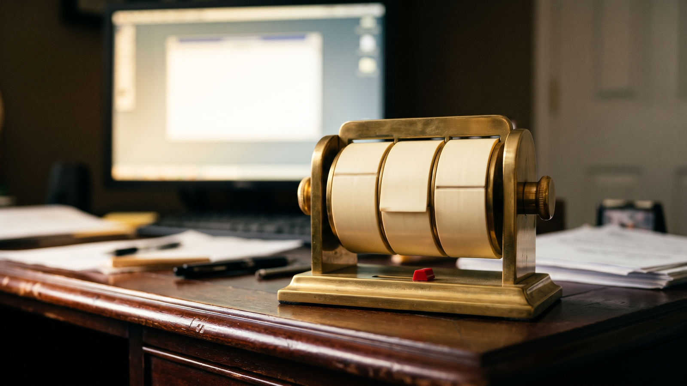

Launch an app inside another day
The shortcut is Run_As_Date.shortcut in the repository. Behind it is a shell script built from the Mac terminal commands date, which sets the system clock, and open, which launches an application by its path. The script sets the date, opens the app, sleeps, and sets the date back.
It exists for the jobs a changed clock is genuinely for: testing an app around its expiry date, exercising date sensitive behaviour, and coaxing older software that checks what day it is.
Two steps, then it is in your library
- Download
Run_As_Date.shortcutfrom the repository and double click it, or drag it onto the Shortcuts app. - Click Add Shortcut. It joins your shortcut library, ready to edit and run.
The date is written as one string
Open the shortcut by double clicking it (tapping the play button runs it instead). The date the Mac will wake up in is a single string in the format MMDDHHmmYY. Read it tile by tile:
The capital M is the month and the small m is the minutes; the format leaves no room to swap them. To aim the shortcut at a different application, replace the example path /Applications/Infuse.app with the path of the app you want. The line sleep 6 is the pause before the true date returns: raise the number for a slow launching app, because the date reverts whether the app finished opening or not.
When it reads right, give the shortcut a name and tap Done. It runs from the Shortcuts app, or out loud through Siri. It can also be extended with an action that asks for the date and the app at run time, so one shortcut serves every target.
Settled on the chosen day

That stillness is the whole trick. Nothing about the app changes. Only the day it wakes up in does, and only for the few seconds the script allows before the calendar rolls home again.
It changes the real clock, with root rights
The README carries a warning and this page repeats it without softening: the script inside runs with root rights and changes the actual system date while it works. Anything else on the Mac that reads the clock during those seconds reads the rolled back day too. Use it deliberately, the way you would turn a desk calendar by hand: knowing you turned it.
One honest limit, also from the README: the shipped shortcut file is signed and encrypted, so its full script text is not published anywhere in readable form. This page describes exactly what the README describes, and claims nothing past it.